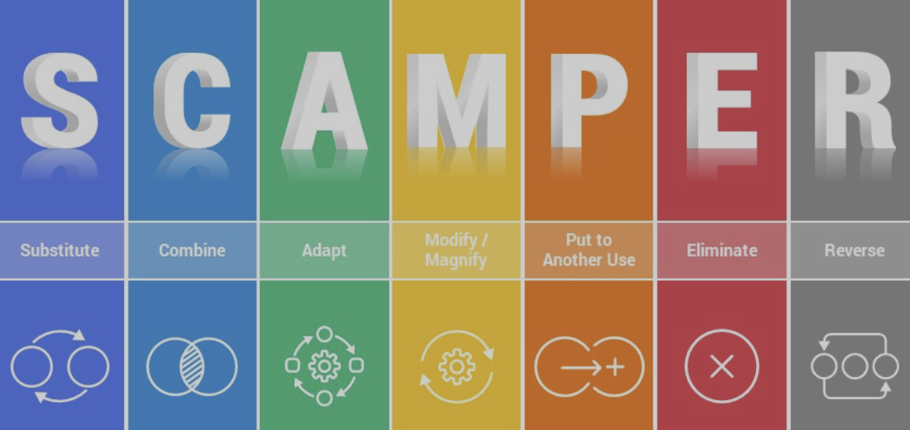

Scrum
'Scrum is a lightweight framework that helps people, teams and organisations generate value through adaptive solutions for complex problems. Scrum focuses on iterative development and collaboration. It divides projects into fixed duration iterations called sprints, cross functional teams work to deliver a shipable increment of the product. Scrum emphasizes adaptability, transparency, and continuous improvement through regular meetings Daily Scrum, Sprint Planning, Sprint Review and Sprint Retrospective. Scrum has weel defined roles Scrum Master, Product Owner and Developers. Scrum is rooted in software development but could be applied to all all complex projects.


| 3 * Roles |
Key Points |
| Product Owner |
- Defines product goals and backlog
- Maximizes value for users and business
- Champions product vision
- Works with stakeholders
|
| Developer (Team Member) |
- Decides how to accomplish work
- Manages the sprint backlog
- Inspects and adapts daily
- Contributes to the sprint goal
|
| Scrum Master |
- Helps the team perform at their best
- Protects the team from distractions
- Coaches and facilitates meetings
- Reinforces agile principles
|
| 5 * Event |
Key Points |
| Sprint Planning |
- Plan the work for the upcoming sprint
- Select backlog items for the sprint
- Create the sprint backlog
|
| Daily Scrum |
- Short daily meeting to synchronize the team
- Discuss progress, challenges, and plans
- 15-minute time-boxed event
|
| Sprint Review |
- Review the increment with stakeholders
- Get feedback and discuss what's done
- Adapt the product backlog as needed
|
| Sprint Retrospective
|
- Reflect on the sprint and team performance
- Identify improvements for the next sprint
- Closed-loop event for continuous improvement
|
| The Sprint
|
- The Sprint could be considered the container which the other events take place.
- Sprints usually range from 2 - 4 weeks but can vary depending on the project.
|
| 3 * Artifact |
Key Points |
| Product Backlog |
- List of all desired product features
- Prioritized by the Product Owner
- Dynamic and constantly evolving
|
| Sprint Backlog |
- Subset of the Product Backlog for the sprint
- Contains work committed to for the sprint
- Owned by the Development Team
|
| Increment |
- Sum of all completed backlog items
- Potentially shippable and usable product
- Reviewed at the end of each sprint
|
How we applied Scrum
Initally we allocatd roles, one person assumed the role of product owner taking ownership of the product backlog, the remaining four members of the team rotated the scrum master role. All members of the team assumed the role of developer. We used four one week sprints, daily standups took place Monday - Friday via online video conferencing with cameras on. Sprint planning and estimation was based on hours, each developer showcased their work during sprint reviews and amended any work based on feedback. Sprint retrospectives highlighted process improvements which we put into the sprint backlog to apply during the next sprint. We developed Iteratively and delivered incrementally.
The Design Thinking Process
Design thinking is a creative and user-centered approach to problem-solving that is often used in the context of web design and product development. It emphasizes understanding the needs and preferences of the end-users to create a more appealing, engaging and functional product.



How we applied Design Thinking Process
The design thinking process is made up of the problem space and the solution space and can be broken down into the following phases.
-
Empathize
-
Define
-
Ideate
-
Prototype
-
Test
-
Implement
-
Iterate
By following the process we were able to explore both the problem space and the solution space identifying user pain points and exploiting opportunities. To aid us in the design process we used tools such as user persona cards, user journey mapping, double diamond and scamper models.
One of the key pain points identified was 'fragmented learning experience'.